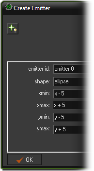
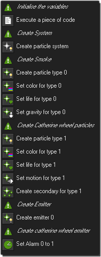
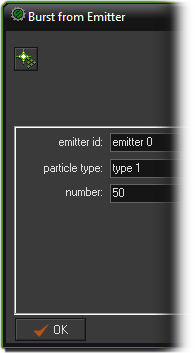
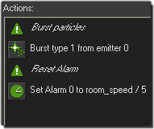
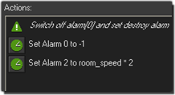
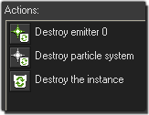
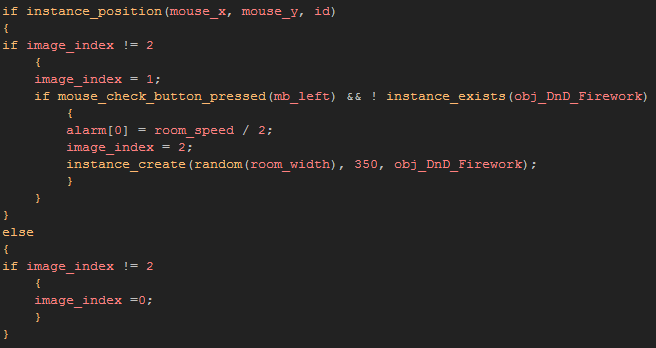

Tutorial
Page 6 of 12
Creating Particles With D'n'D (III)
The last thing we need to add to our create event for the catherine wheel effect is an emitter. An emitter is what we are going to use to creat our particles and it can either burst them
or stream them, where bursting means a one off explosion of particles, and streaming means that particles will be generated every step.
As with particle systems and types, emitters must first be defined and stored within a particle system before they can be used, so lets add an emitter to our Create Event now:

Again, like particle types, you can have a number of different emitters in any one particle system and each emitter can create any of the previously defined particles that you have. once you have chosen an
id for your emitter (in this case "emitter 0"), you need to give it a shape and an area in which to emit the particles.
We are going to use an ellipse shape and the area is going to be a small area around the x/y position of the instance when created as this will give a slight variation in the distance each particle travels and
so make our catherine wheel slightly less perfectly circular. You can set the minimum and maximum x and y coordinates to the same value to have the particles created from a point, other wise the particles
will be created at a random position within the specified boundaries and shape.
NOTE : If you need your particle emitter to move with an instance, this action should actually go in the Step Event for the instance so that the emitter position is updated every step.
After setting up the emitter we need to add an Alarm[0] Event to control the whole thing, and the final action list should look like this:

In the alarm[0] event, we are going to burst some particles and the reset the alarm again so that for the lifetime of the instance, every few steps, it will create some nice firework particles. To do this we need
the Burst From Emitter action like this:

We are telling it to burst 50 particles of type 1 from emitter0, and we should also add in an alarm call to reset alarm[0] to another value, with the finished action list looking like this:

Now we need to add alarm[1] into the instance (which we set to run from the create event) as that is what is going to stop the effect and destroy the instance from the room. In the Alarm[1] Event you
should have:

The last alarm to define is the Alarm[2] Event, but it is a vitally important one as here we are going to destroy the instance and the particle system and emitter that it contains. You see, particle systems,
types and emitters all take up memery and are indexed so that you can manipulate and use them. however, if you destroy the instance without destroying the system, then all the particle stuff belonging to that
system loses it's index value and can no longer be used, or changed. this can cause grave problems for a game and so you should always clean up your particle systems when no longer needed.
To that end, your alarm[2] event actions should look like this:

We first destroy the emitter, then the system and then instance itself. When done in that order we ensure that everything is tidied up properly and taken care of.
We can now finally create our D'n'D created catherine wheel effect, so duplicate the "obj_BuiltIn_Button" and rename the duplicate to "obj_DnD_Button" (don't forget to assign it the correct button sprite
too!), and then goto the step event code and change it to have the following code in it:

It is essentially the same as the previous button object, only now the instance will only create one copy of the catherine wheel firework at a time. You can now place a copy of this new button in the room and
run the game to see how the effect looks.
Once you are happy, save the game and continue.
Click on the Next button to go to the next page of the tutorial.